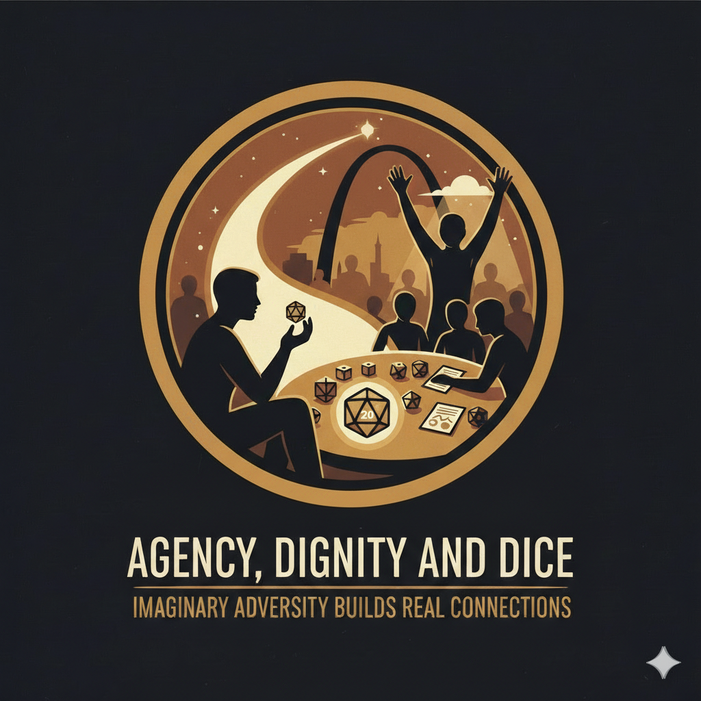

TTRPG Programming for Adults with IDD
A community recreation framework that uses tabletop role-playing games to build social connection, confidence, and leadership in adults with intellectual and developmental disabilities.
Get in TouchThe Program
Since February 2021, this program has brought full-complexity tabletop role-playing games to adults with intellectual and developmental disabilities in St. Louis, Missouri. Participants don't play simplified systems designed for therapy. They play real games with real consequences, supported by facilitation techniques that make complexity accessible without removing it.
The result: participants who entered cautious now run their own tables for their peers. Groups that started with a facilitator now operate independently, setting their own schedules, meeting at each other's homes, and building social connections that extend far beyond the game.
This is not a clinical intervention. It is community recreation that treats the game itself as the point and trusts participants with the full experience. Growth is emergent, not prescribed.
Five Years of Data
Single-site, practitioner-observed data from five years of sustained programming. Reported with honesty about what was formally tracked and what requires further study.
Core Philosophy
The DM Pipeline
The program's long-term viability depends on growing facilitators from within the participant population. This isn't supplementary. It's the mechanism that allows the program to outlive any single facilitator.
About
Jonathan Rabida built the Agency, Dignity, and Dice framework through five years of direct work with adults with intellectual and developmental disabilities at Pathways to Independence in St. Louis, Missouri, drawing on twenty-five years of TTRPG facilitation experience. He currently serves as a Vocational Support Specialist at The Arc of St. Louis.
The program's facilitation framework — including the Closed Eyes Binary System, the DM Pipeline, and the three-tier conflict management model — was developed through practice and refined through experience, not derived from clinical theory applied to a recreation activity.
A practice report documenting this framework has been submitted to the American Journal of Recreation Therapy. To the author's knowledge, this represents the first documented program serving adults with IDD through sustained, full-complexity TTRPG programming at community recreation scale, with a structured pipeline for developing independent facilitators from the participant population.
Get in Touch
For inquiries about the program, the facilitation framework, speaking engagements, research collaboration, or media.
j.rabida@agencydignityanddice.com